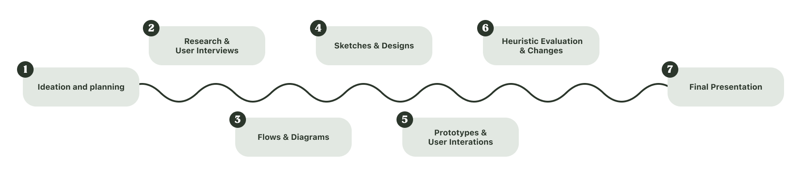
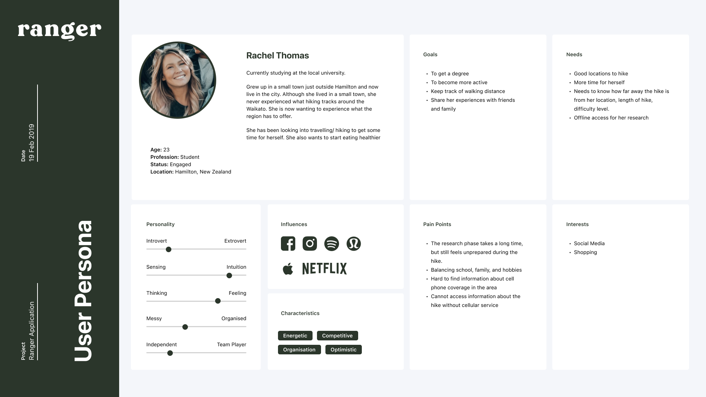
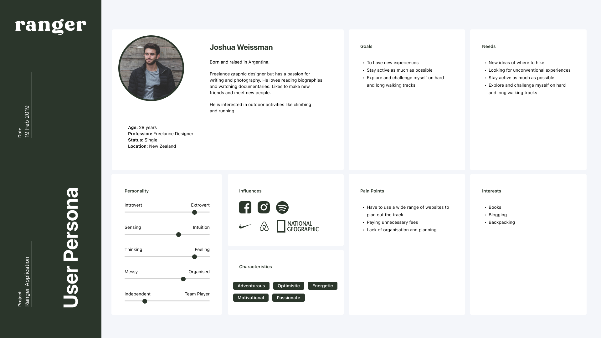
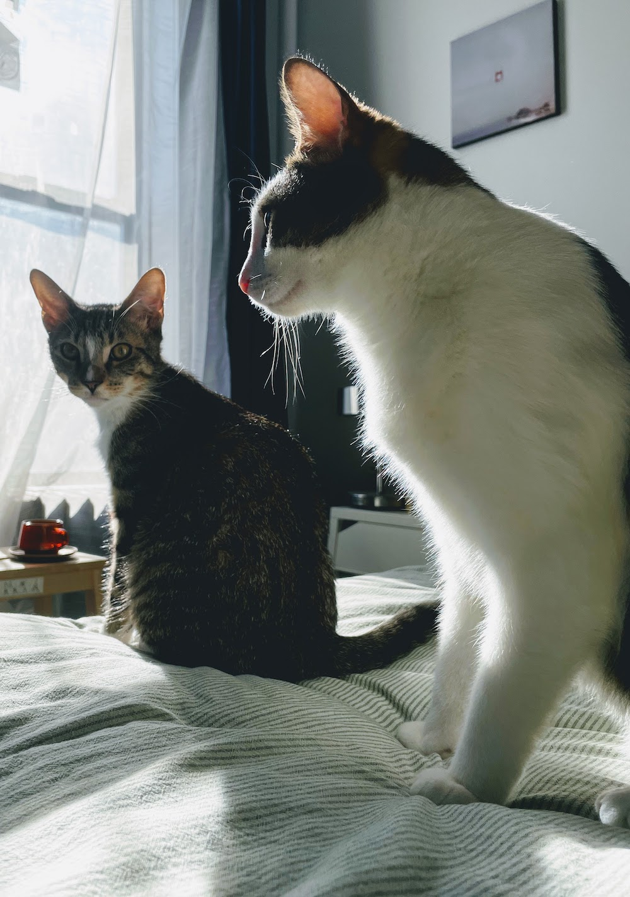
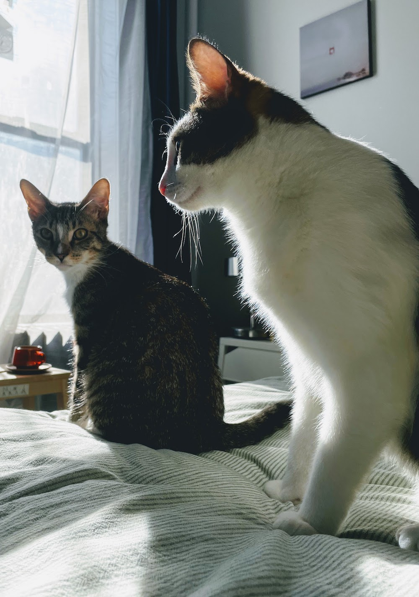

Mobile Application
Ranger
A walking app with a goal to promote the local walkways and hiking tracks around the Waikato region.
Interact with the live prototype here🗓 Timeline: 8 Weeks
🖥 Role: UX Designer
🧰 Tools: Adobe XD
✏️ Project Overview:
Researched, planned (sketches & high fidelity designs) and prototyped a mobile application that encourages and promotes the usage of local walkways
Project Timeline
✏️ Ideation and Planning
Typically one in four holiday visitors during the last five years participated in
a
walking or hiking activity during their visit to New Zealand. This equates to
over a
million international visitors, at an average of 254,000 per year.
Tourism
New Zealand
🗒 Research & User Interviews
We created three personas during our user research phase. We determined there were two main groups of hikers.
Group 1 - The Beginner Hiker.
Interested in hiking, but feels overwhelmed and unfamiliar because this person never went on a hike before.
Group 2 - The Experienced Hiker.
Already went on a few hikes and feels comfortable hiking. This person is looking for a hiking community to get involved with and to share their experience and stories.
We wanted the website to be streamlined so we chose to focus on making the best site for beginner hikers (group 1). We started researching the pain points of new hikers. Here's what we found:
New hikers don't know where to go to find a good hiking trail.
They want to feel like they're getting a custom trail suggested for their needs.
Feel Uninformed.
New hikers know they're uninformed about hiking, and they want to have a
better understanding of what to expect before going on their first hike.
 
